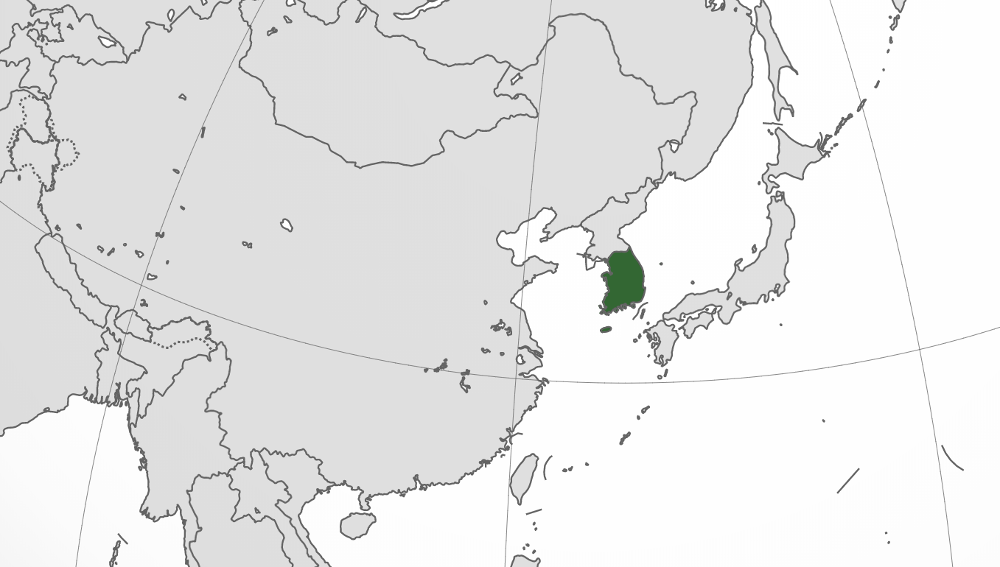

Corea del Sur
La República de Corea (대한민국) es un país soberano de Asia Oriental, ubicado en la parte sur de la península de Corea. Limita al norte con la República Popular Democrática de Corea (Corea del Norte), con la cual formó un solo país hasta 1945. Al este se encuentra el mar del Japón, al sur el estrecho de Corea, que lo separa de Japón, y al oeste el mar Amarillo. Su territorio comprende la mitad sur de la península de Corea englobando unas tres mil islas que la rodean, dentro de las cuales se destacan Jeju, Ulleungdo y Dokdo.
La población de Corea del Sur es de aproximadamente 51.845.612 personas (a julio de 2019). Seúl es la ciudad con más población en el país, y luego siguen de forma descendente las ciudades de Busan, Incheon, Daegu, Daejeon, Gwangju y Ulsan.
Bandera Nacional: Taegeukgi

El aspecto actual de la bandera nacional de Corea del Sur fue establecido el 15 de octubre de 1949. En su fondo blanco lleva un círculo bicolor, rojo y azul, en los extremos se ubican 4 trigramas de color negro. El blanco simboliza la paz, la esfera es el balance entre el yin y el yang, los 4 trigramas son una representación gráfica de los elementos agua, fuego, tierra y cielo, que juntos representan movimiento y armonía como principios fundamentales para el desarrollo de la nación.
"Los colores de la bandera fueron fuente de inspiración para el diseño de este sitio"